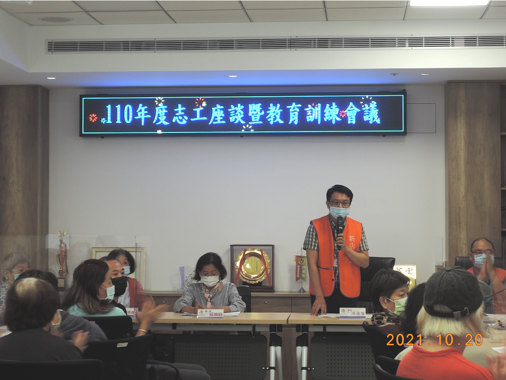
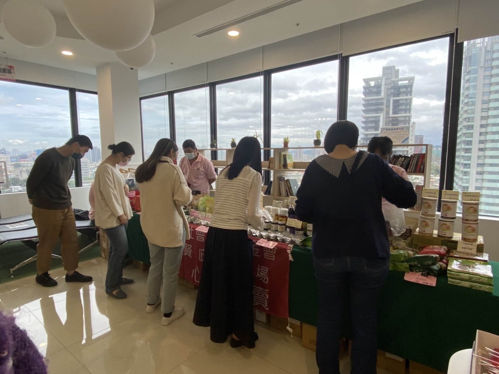
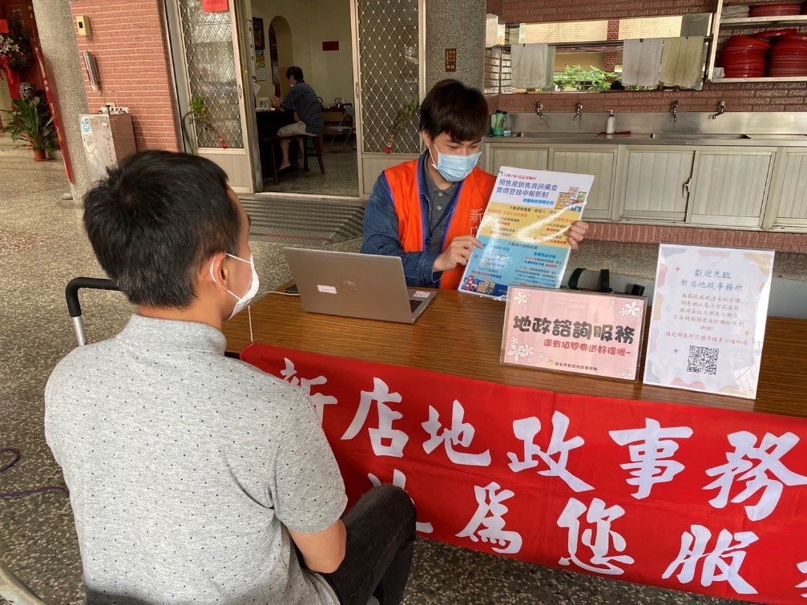
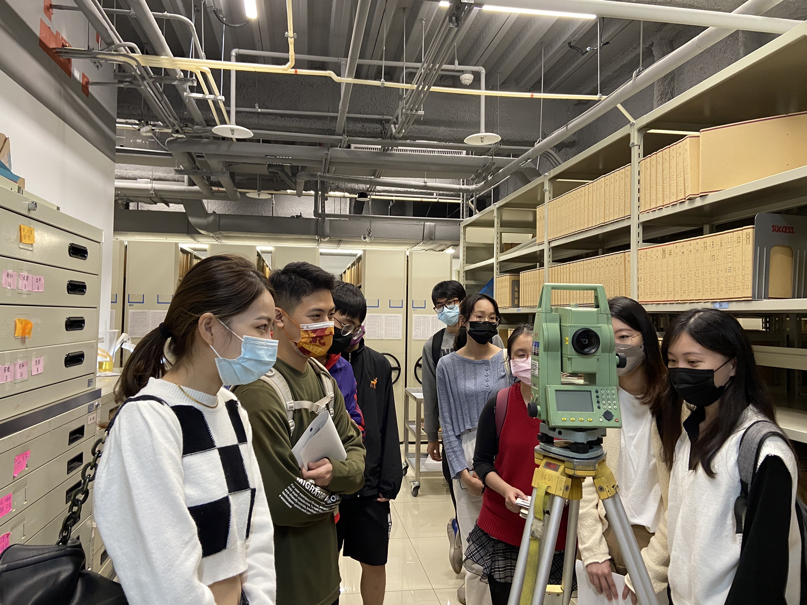
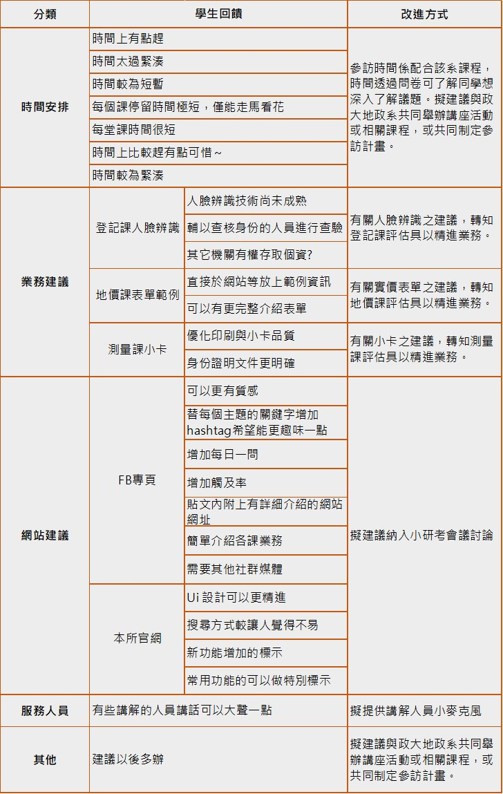

二、其他意見調查工具與機制執行情形
本所除滿意度調查外，適時彈性運用其他機制瞭解民眾對服務的評價，共計 6 項，分別為地價作業說明會、志工座談會、GOOGLE 商家、愛心義賣活動、地政專車及政大學生參訪回饋等，執行情形及調查成果詳如下表：
| 調查方式 |
執行情形、調查成果及改善措施 |
| 地價作業說明會 |
- 執行情形：
本次說明會將說明該所轄區本年度辦理地價調查、區段劃分、地價調查估計作業情形、市政重大開發建設等影響地價因素及最近一期地價動態等內容，期透過公開說明，使各界充分解地價訂定流程、動態趨勢，並蒐集各方建言，使地價作業更透明化，達到地價合理、稅賦公平的目的。
- 調查成果：
本次經現場服務人員及與會人員表示說明會現場狀況順利，無相關建議事項，服務評價 100% 滿意。
 【地價作業說明會】
【地價作業說明會】
|
| 志工座談會 |
- 執行情形
本所每年定期舉辦志工座談會（110 年度參加人數 26 人），由志工發表這一年來服務心得及意見，並舉辦相關「網路申請登記」教育訓練，提升本所服務品質。
- 調查成果：
經服務人員於座談會結束後詢問與會志工本次座談會辦理狀況，均表示受益良多，滿意度 100%，希望能多加舉辦各類型教育訓練。

【志工座談會】
- 改善措施：
| 編號 |
服務評價 |
改善回應 |
| 1 |
懇請地所以操作視訊方式使用辦理規劃邀請志工教育訓練課程（全程開啟視訊）以 LINE、簡訊等方式通知報名成功的消息。 |
本所本次志工座談會亦規劃有教育訓練課程。因應疫情，同期間原年度計畫中應實施之訓練課程，本所擬綜合考量訓練主題、課程內容及實施之急迫性，視需要規劃辦理線上視訊 教育訓練課程。 |
| 2 |
服務中心上端創作製成簡介介紹。 |
本所刻正規劃 14 樓時光廊道展示區，內容包含有服務中心挑空區之設計理念說明，可提供志工夥伴參考，並向民眾介紹。 |
| 3 |
多年來頒發獎狀及感謝狀型式不變，無新款式，期能以志工的精神，製作新獎狀及感謝狀。 |
本所志工獎狀及感謝狀因使用量有限，並為節省製版費考量，歷來均購買坊間文具用品廠商之現有定型化萬用證書使用，爰本所志工獎狀及感謝狀之式樣是否變更及式樣設計之決定方法（譬如：志工提供範本、志工自行設計、召開臨時會議議決），俟與會志工討論，本所依其結果更新款式。 |
|
| GOOGLE 商家 |
- 執行情形
透過 GOOGLE 商家不定期發布地政業務宣導或本所最新推行之便民服務措施，當民眾使用 GOOGLE 商家作為管道來查詢本所相關資訊時，即可一併瞭解目前本所最新活動、服務以及動態消息等。此外，
本所也積極運用 GOOGLE 商家瞭解民眾對本所的服務評價，作為日後精進之依據。
- 調查成果：
本年度共計獲取 14 則評論，其中 10 則皆給予本所提供之服務高度肯定，其餘 4 則建議本所亦虛心納諫，作為日後精進服務之依據。
 【民眾給予之五星評價】
【民眾給予之五星評價】
 【民眾給予之服務建議】
【民眾給予之服務建議】
- 改善措施：
| 編號 |
服務評價 |
改善回應 |
| 1 |
櫃台收件速度慢，致民眾等候案件時間久 |
民眾自行申辦測量、登記等業務時，由服務中心同仁協助先行檢視有無缺漏相關應附文件，以加速後續受理櫃檯處理時間，並避免其他現場民眾久候。 |
| 2 |
櫃台同仁服務不佳 |
由於人員流動率高導致新進同仁不熟悉業務，故除加強同仁為民服務之教育訓練外，本所亦製作櫃檯工作手冊，可幫助新人快速上手櫃檯業務，將櫃台經驗完整記錄、傳承下去，以提供民眾更好的服務。 |
| 3 |
網路沒訊號不方便 |
本所已於新店市政廳管委會提案改善本棟大樓行動訊號不良問題，因大樓管委會不同意架設行動通訊設備及訊號延伸主機，故本所電信訊號及網路收訊差等問題無法獲得改善。為利民眾洽公時可供上網查閱相關資訊，本所提供 NewTaipei 免費無線上網服務，供民眾以手機 Wi-Fi 功能免費無線上網。 |
| 4 |
臨櫃送件流程繁瑣 |
本所服務中心人員主要係協助民眾申辦地政相關業務及法令諮詢等服務，如係申請謄本，已知地段地號建號等資料，可逕行抽取號碼牌臨櫃辦理；如係申辦測量、登記等業務，相關文件已齊備且案件裝釘完成，無須服務中心人員檢查文件，亦可直接抽取號碼牌臨櫃送件，惟考量民眾自行申辦測量、登記業務，因不諳相關流程及文件，協助檢查文件係為先行檢視有無缺漏相關應附文件，俾利加速後續受理櫃檯處理時間，並避免其他現場民眾久候，以提升本所更完善服務效能。 |
|
| 「溫馨五月，感恩母愛」愛心義賣活動 |
- 執行情形
本所於 111 年 5 月 4 日與集賢庇護工場共同舉辦母親節愛心義賣活動，本次義賣活動結合檔案應用推廣宣導，藉由 3 題簡單的 Q & A，讓民眾能初步了解檔案應用可提供方式、申請方式及應備文件。
- 調查成果：
活動現場回收滿意度問卷達 77 份，服務評價 100%。

【溫馨五月，感恩母愛活動花絮】
|
| 地政專車 |
- 執行情形
鑒於本所轄區幅員廣闊，地形地貌多元，為提供偏遠地區便利地政服務，以擴大延伸本所服務範圍廣度，本所每月辦理至少一場地政專車服務，除提供業務申辦及各項諮詢服務，延伸政府機關服務據點，更為針對轄區居民宣導檔案應用申請之優質服務，透過現場宣導，更能加深居民對於本所地政便捷服務印象，回家後參加居民能推廣至親朋好友，以達到一傳十、十傳百之宣傳效益。
- 調查成果：
本所自 111 年 1 月起開始於地政專車出隊進行宣導，迄今共辦理 6 場地政專車巡迴服務，受調民眾 127 人，服務評價 100%。

【地政專車活動花絮】
|
| 學生參訪回饋 |
- 執行情形
國立政治大學地政學系師生共 66 人來所參訪。
- 調查成果：
問卷內容分為三大部分，包括：活動流程與時間規劃、本所環境設施及業務、學生參訪回饋與建議等。經統計後：
(1) 「時間規劃」方面平均滿意度 4.7 分
(2) 「流程規劃」方面平均滿意度 4.8 分
(3) 「環境設施」方面平均滿意度 4.9 分
(4) 「資訊獲得」方面認為能夠有效瞭解實務操作情形；次之者則為能提升課程實務應用能力

【政大學生參訪花絮】
- 參訪回饋與建議：
- 針對學生回饋建議，本所均予以回應並積極改善。

【政大學生參訪意見表】
- 為有效導入政大學生觀點，期許本所提供之服務能切合民眾使用需要，特參採以下 2 項建議：
(1) 測量貼心小卡 2.0
於測量貼心小卡中精確說明各式複丈案件「收費標準」及「優化印刷品質」，以精進為民服務業務。
(2) 客製化實價登錄申報書表 2.0
修正客製化實價登錄申報書表單範例之順序及內容，讓使用者更加清楚明瞭。
|